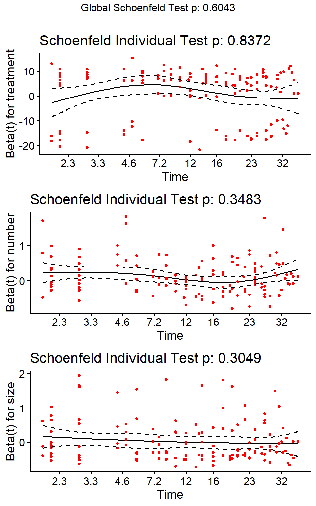
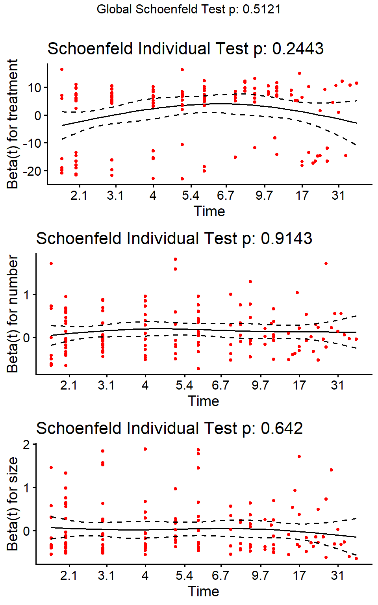
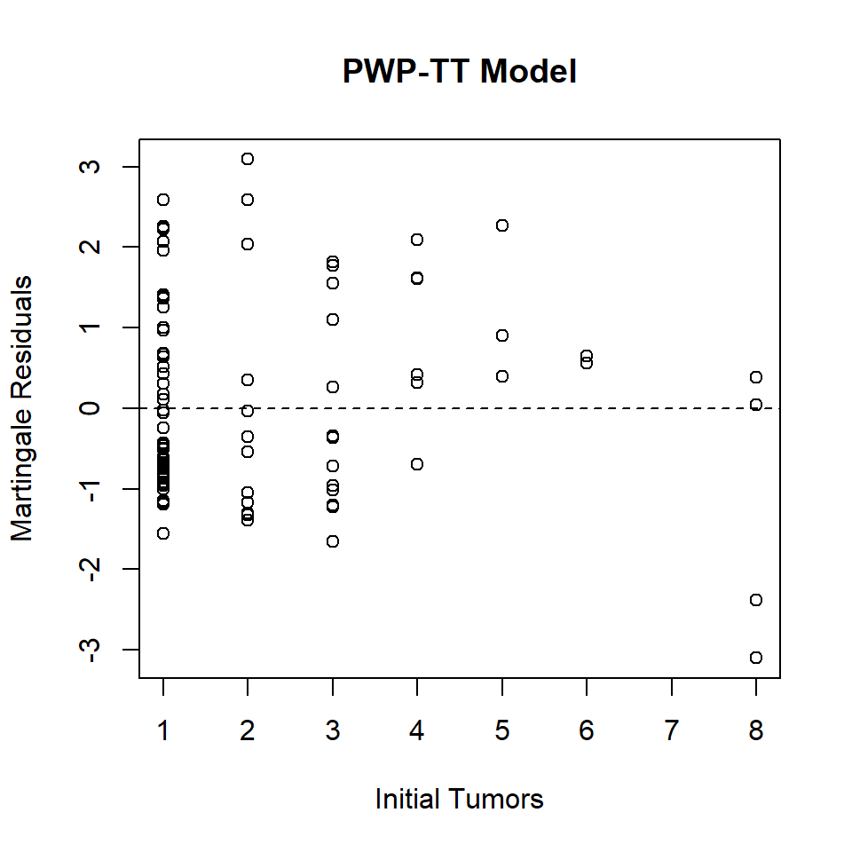
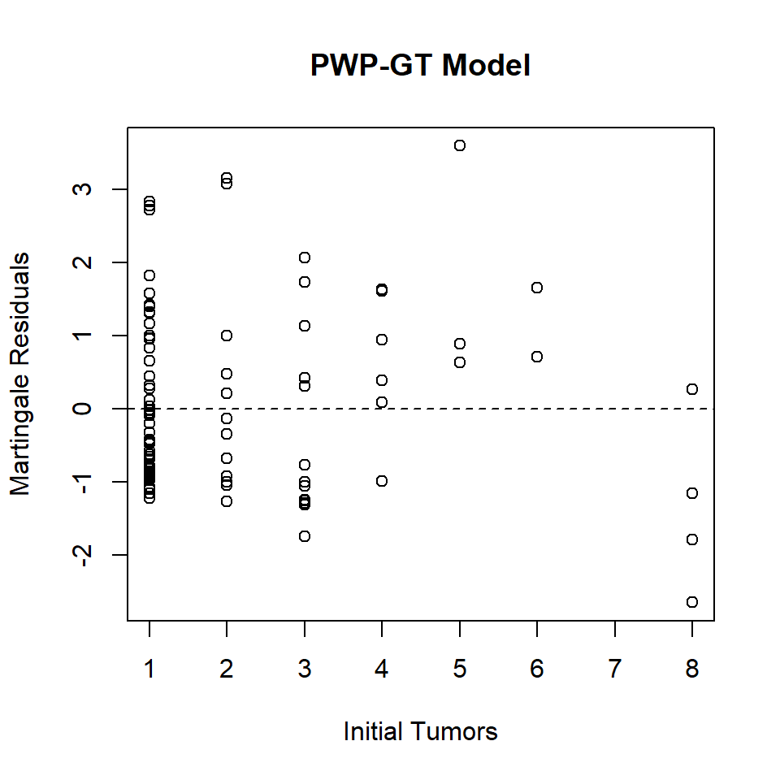
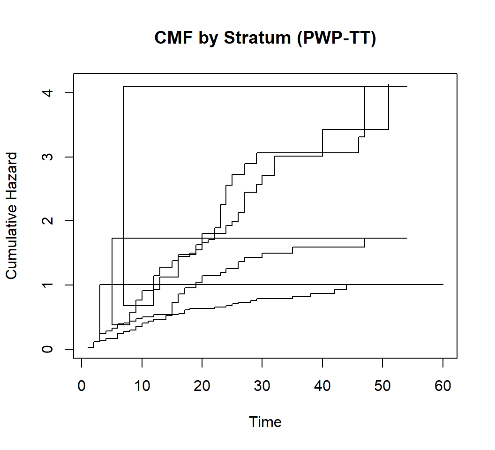
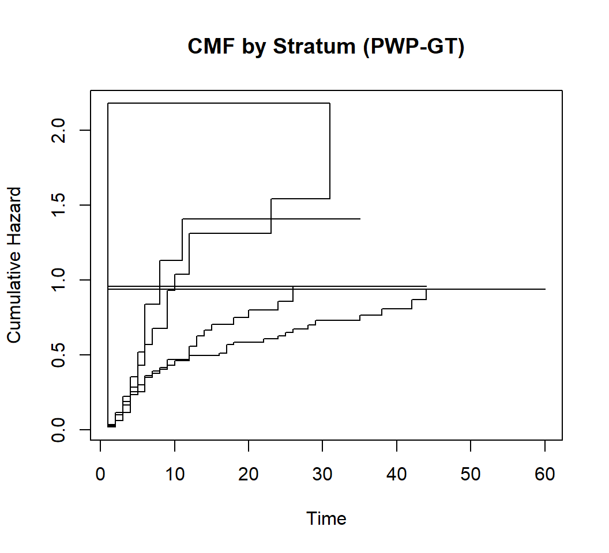

Code
packages <-c(
'tidyverse',
'survival',
'survminer',
'ggsurvfit',
'tidycmprsk',
'ggfortify',
'timereg',
'cmprsk',
'riskRegression',
'reda'
)


In many longitudinal studies, subjects may experience multiple occurrences of the same event—such as hospital readmissions, seizures, or equipment failures. While the Andersen-Gill (AG) model treats all events as independent increments in a counting process, it ignores the natural ordering and history of events (e.g., time since last event or number of prior events).
This tutorial explains the PWP framework, demonstrates how to implement both PWP-GT and PWP-TT models in R, covers data preparation, model fitting, diagnostics, and visualization of the Mean Cumulative Function (MCF)—the recurrent-event analog of the Cumulative Incidence Function (CIF).
Prentice-Williams-Peterson (PWP) models are extensions of the Cox proportional hazards model specifically designed for analyzing recurrent event data, where the same type of event (e.g., infections, hospitalizations, or tumor recurrences) can occur multiple times for an individual. Unlike standard survival analysis for single events, PWP models account for the ordering and dependency of repeated events by stratifying the analysis based on the number of prior events. This stratification creates conditional risk sets: all subjects are at risk for the first event, but only those who experienced the first are at risk for the second, and so on.
PWP models are particularly useful in epidemiology and clinical studies, such as tracking recurrent infections in patients with chronic conditions (e.g., cystic fibrosis or kidney disease) or repeated sports injuries. They allow for event-specific covariate effects, meaning the impact of predictors like treatment or age can vary across event orders. However, if the number of events is large, risk sets for later events may become small, leading to unstable estimates—often requiring truncation (e.g., analyzing only the first 3-4 events).
The Andersen-Gill (AG) model is an intensity-based extension of the Cox model for recurrent events, treating the data as a counting process. It models the instantaneous rate (intensity) of events conditional on the event history and covariates, assuming a common baseline hazard across all events:
\[ \lambda(t | \bar{N}(t-), Z(t)) = \lambda_0(t) \exp(\beta^T Z(t)) \]
Here, \(\lambda_0(t)\) is the baseline intensity, \(Z(t)\) are (possibly time-dependent) covariates, and \(\bar{N}(t-)\) is the event history up to just before t. The AG model assumes that correlations between events are fully explained by included covariates (e.g., a time-dependent covariate for the number of prior events). If not, robust standard errors (via clustering on subject ID) are used to account for within-subject dependence.
There are two main variants:
PWP-TT (Total Time or Conditional Risk Set Model): Measures time from study entry to each event, similar to calendar time. It’s suitable when the overall timeline matters, and it assumes a common baseline hazard within each stratum (event order) but allows covariate effects to differ.
PWP-GT (Gap Time Model): Measures the time between consecutive events (inter-event gaps), resetting the clock after each event. This assumes a renewal process and is ideal for focusing on waiting times between recurrences, such as predicting the time to the next event.
| Model | Time Scale | Interpretation |
|---|---|---|
| PWP-GT (Gap Time) | Time since previous event | “What is the risk of the k-th event given the (k–1)-th occurred?” |
| PWP-TT (Total Time) | Time since study entry | “What is the risk of the k-th event at calendar time t?” |
The PWP model stratifies by event number (1st event, 2nd event, etc.), allowing the baseline hazard to differ across event orders. This acknowledges that the risk of a second event may differ from the first due to biological, behavioral, or mechanical factors.
Not suitable if subjects can experience events without prior ones (e.g., simultaneous events).
| Feature | AG Model | PWP Model |
|---|---|---|
| Time scale | Calendar time | TT: calendar; GT: gap time |
| Event dependence | Assumes independence (robust SEs) | Explicitly models order via strata |
| At-risk assumption | Always at risk until censoring | Only at risk for k-th event after (k–1)-th occurs |
| Best for | Event rate over time | Event timing/order |
We’ll use simulated recurrent event data and fit both PWP-GT and PWP-TT models using the survival package.
Following R packages are required to run this notebook. If any of these packages are not installed, you can install them using the code below:
packages <-c(
'tidyverse',
'survival',
'survminer',
'ggsurvfit',
'tidycmprsk',
'ggfortify',
'timereg',
'cmprsk',
'riskRegression',
'reda'
){r #| warning: false #| error: false # Install missing packages new_packages <- packages[!(packages %in% installed.packages()[,"Package"])] if(length(new_packages)) install.packages(new_packages) devtools::install_github("ItziarI/WeDiBaDis")
# Verify installation
cat("Installed packages:\n")Installed packages:print(sapply(packages, requireNamespace, quietly = TRUE))Registered S3 method overwritten by 'riskRegression':
method from
nobs.multinom broom tidyverse survival survminer ggsurvfit tidycmprsk
TRUE TRUE TRUE TRUE TRUE
ggfortify timereg cmprsk riskRegression reda
TRUE TRUE TRUE TRUE TRUE # Load packages with suppressed messages
invisible(lapply(packages, function(pkg) {
suppressPackageStartupMessages(library(pkg, character.only = TRUE))
}))# Check loaded packages
cat("Successfully loaded packages:\n")Successfully loaded packages:print(search()[grepl("package:", search())]) [1] "package:reda" "package:riskRegression" "package:cmprsk"
[4] "package:timereg" "package:ggfortify" "package:tidycmprsk"
[7] "package:ggsurvfit" "package:survminer" "package:ggpubr"
[10] "package:survival" "package:lubridate" "package:forcats"
[13] "package:stringr" "package:dplyr" "package:purrr"
[16] "package:readr" "package:tidyr" "package:tibble"
[19] "package:ggplot2" "package:tidyverse" "package:stats"
[22] "package:graphics" "package:grDevices" "package:utils"
[25] "package:datasets" "package:methods" "package:base" We use the survival package and bladder1 dataset, which contains recurrent bladder tumor data. The data set contains multiple rows per patient, with start and stop times for each interval, event indicators, and covariates.
id: Patient id treatment: Placebo, pyridoxine (vitamin B6), or thiotepa number: Initial number of tumours (8=8 or more) size: Size (cm) of largest initial tumour recur: Number of recurrences start,stop: The start and end time of each time interval status: End of interval code, 0=censored, 1=recurrence, 2=death from bladder disease, 3=death other/unknown cause rtumor: Number of tumors found at the time of a recurrence rsize: Size of largest tumor at a recurrence enum: Event number (observation number within patient)
# Load bladder1 (long format)
data(bladder1)Warning in data(bladder1): data set 'bladder1' not foundstr(bladder1)'data.frame': 294 obs. of 11 variables:
$ id : int 1 2 3 4 5 6 6 7 8 9 ...
$ treatment: Factor w/ 3 levels "placebo","pyridoxine",..: 1 1 1 1 1 1 1 1 1 1 ...
$ number : int 1 1 2 1 5 4 4 1 1 1 ...
$ size : int 1 3 1 1 1 1 1 1 1 3 ...
$ recur : int 0 0 0 0 0 1 1 0 0 1 ...
$ start : int 0 0 0 0 0 0 6 0 0 0 ...
$ stop : int 0 1 4 7 10 6 10 14 18 5 ...
$ status : num 3 3 0 0 3 1 3 0 0 1 ...
$ rtumor : chr "." "." "." "." ...
$ rsize : chr "." "." "." "." ...
$ enum : num 1 1 1 1 1 1 2 1 1 1 ...We will create gaptime for PWP-GT and truncate to the first 4 events for stable risk sets:
# Identify problematic rows
invalid_intervals <- bladder1[bladder1$stop <= bladder1$start, ]
invalid_status <- bladder1[!bladder1$status %in% c(0, 1), ]
# Remove invalid rows
bladder1_clean <- bladder1 %>%
filter(stop > start, status %in% c(0, 1))
# Create gaptime for PWP-GT
bladder1_clean <- bladder1_clean %>%
group_by(id) %>%
mutate(gaptime = stop - start) %>%
ungroup()
# Truncate to first 4 events for PWP models
bladder_trunc <- bladder1_clean[bladder1_clean$enum <= 4, ]
# Verify
head(bladder_trunc)# A tibble: 6 × 12
id treatment number size recur start stop status rtumor rsize enum
<int> <fct> <int> <int> <int> <int> <int> <dbl> <chr> <chr> <dbl>
1 3 placebo 2 1 0 0 4 0 . . 1
2 4 placebo 1 1 0 0 7 0 . . 1
3 6 placebo 4 1 1 0 6 1 1 1 1
4 7 placebo 1 1 0 0 14 0 . . 1
5 8 placebo 1 1 0 0 18 0 . . 1
6 9 placebo 1 3 1 0 5 1 2 4 1
# ℹ 1 more variable: gaptime <int>pwp_tt_fit <- coxph(Surv(start, stop, status) ~ treatment + number + size + strata(enum) + cluster(id),
data = bladder_trunc, robust = TRUE)
summary(pwp_tt_fit)Call:
coxph(formula = Surv(start, stop, status) ~ treatment + number +
size + strata(enum), data = bladder_trunc, robust = TRUE,
cluster = id)
n= 216, number of events= 149
coef exp(coef) se(coef) robust se z Pr(>|z|)
treatmentpyridoxine 0.01842 1.01859 0.21156 0.25150 0.073 0.9416
treatmentthiotepa -0.21361 0.80766 0.21185 0.18601 -1.148 0.2508
number 0.10925 1.11544 0.04400 0.04574 2.388 0.0169 *
size 0.01889 1.01907 0.05110 0.05280 0.358 0.7206
---
Signif. codes: 0 '***' 0.001 '**' 0.01 '*' 0.05 '.' 0.1 ' ' 1
exp(coef) exp(-coef) lower .95 upper .95
treatmentpyridoxine 1.0186 0.9818 0.6222 1.668
treatmentthiotepa 0.8077 1.2381 0.5609 1.163
number 1.1154 0.8965 1.0198 1.220
size 1.0191 0.9813 0.9189 1.130
Concordance= 0.615 (se = 0.029 )
Likelihood ratio test= 6.42 on 4 df, p=0.2
Wald test = 6.06 on 4 df, p=0.2
Score (logrank) test = 6.91 on 4 df, p=0.1, Robust = 8.71 p=0.07
(Note: the likelihood ratio and score tests assume independence of
observations within a cluster, the Wald and robust score tests do not).pwp_gt_fit <- coxph(Surv(gaptime, status) ~ treatment + number + size + strata(enum) + cluster(id),
data = bladder_trunc, robust = TRUE)
summary(pwp_gt_fit)Call:
coxph(formula = Surv(gaptime, status) ~ treatment + number +
size + strata(enum), data = bladder_trunc, robust = TRUE,
cluster = id)
n= 216, number of events= 149
coef exp(coef) se(coef) robust se z Pr(>|z|)
treatmentpyridoxine -0.003212 0.996793 0.206778 0.229990 -0.014 0.98886
treatmentthiotepa -0.204154 0.815337 0.205963 0.203142 -1.005 0.31491
number 0.142757 1.153450 0.043835 0.045034 3.170 0.00152 **
size 0.024727 1.025035 0.049948 0.052969 0.467 0.64063
---
Signif. codes: 0 '***' 0.001 '**' 0.01 '*' 0.05 '.' 0.1 ' ' 1
exp(coef) exp(-coef) lower .95 upper .95
treatmentpyridoxine 0.9968 1.0032 0.6351 1.564
treatmentthiotepa 0.8153 1.2265 0.5475 1.214
number 1.1534 0.8670 1.0560 1.260
size 1.0250 0.9756 0.9240 1.137
Concordance= 0.602 (se = 0.029 )
Likelihood ratio test= 9.94 on 4 df, p=0.04
Wald test = 10.83 on 4 df, p=0.03
Score (logrank) test = 11.06 on 4 df, p=0.03, Robust = 12.39 p=0.01
(Note: the likelihood ratio and score tests assume independence of
observations within a cluster, the Wald and robust score tests do not).Note: -
cluster(id)provides robust standard errors. -strata(event_order)allows baseline hazard to vary by event number. - In PWP-GT, the first event is often analyzed separately (as it has no prior gap).
# For PWP-TT
zph_tt <- cox.zph(pwp_tt_fit)
print(zph_tt) chisq df p
treatment 0.355 2 0.84
number 0.880 1 0.35
size 1.053 1 0.30
GLOBAL 2.728 4 0.60ggcoxzph(zph_tt)Warning: ggtheme is not a valid theme.
Please use `theme()` to construct themes.
ggtheme is not a valid theme.
Please use `theme()` to construct themes.
ggtheme is not a valid theme.
Please use `theme()` to construct themes.
# For PWP-GT
zph_gt <- cox.zph(pwp_gt_fit)
print(zph_gt) chisq df p
treatment 2.8188 2 0.24
number 0.0116 1 0.91
size 0.2162 1 0.64
GLOBAL 3.2800 4 0.51ggcoxzph(zph_gt)Warning: ggtheme is not a valid theme.
Please use `theme()` to construct themes.
ggtheme is not a valid theme.
Please use `theme()` to construct themes.
ggtheme is not a valid theme.
Please use `theme()` to construct themes.
If PH violated for a stratum, consider time-dependent effects or separate models per event order.
Martingale residuals can be examined per stratum:
res_PWP_tt <- residuals(pwp_tt_fit, type = "martingale", collapse = bladder_trunc$id)
plot(res_PWP_tt ~bladder_trunc$number[match(names(res_PWP_tt), bladder_trunc$id)],
xlab = "Initial Tumors",
ylab = "Martingale Residuals",
main = "PWP-TT Model")
abline(h = 0, lty = 2)
res_PWP_gt <- residuals(pwp_gt_fit, type = "martingale", collapse = bladder_trunc$id)
plot(res_PWP_gt ~bladder_trunc$number[match(names(res_PWP_gt), bladder_trunc$id)],
xlab = "Initial Tumors",
ylab = "Martingale Residuals",
main = "PWP-GT Model")
abline(h = 0, lty = 2)
While PWP models estimate hazard ratios per event order, the Mean Cumulative Function (MCF) shows the average number of events per subject over time—the recurrent-event analog of CIF.
We’ll use the reda package:
base_tt <- basehaz(pwp_tt_fit, centered = FALSE)
plot(base_tt$hazard ~ base_tt$time, type = "s", xlab = "Time", ylab = "Cumulative Hazard",
main = "CMF by Stratum (PWP-TT)")
base_gt <- basehaz(pwp_gt_fit, centered = FALSE)
plot(base_gt$hazard ~ base_gt$time, type = "s", xlab = "Time", ylab = "Cumulative Hazard",
main = "CMF by Stratum (PWP-GT)")
Note: The MCF is not directly output by PWP models—it’s a descriptive summary of the event process, often used alongside modeling.
This tutorial demonstrated how to implement Prentice-Williams-Peterson (PWP) models for recurrent event data in R, covering both PWP-TT and PWP-GT variants. Key steps included: data preparation, model fitting with coxph(), diagnostics, and visualization of the Mean Cumulative Function (MCF). This tutorial provides a foundational implementation. For full applications, consult the survival package vignettes or supplementary materials from epidemiological studies.
survival: Core Cox models with strata()reda: MCF estimation and recurrent event simulationfrailtypack: Frailty models for recurrent eventsvignette("survival") and vignette("timedep", package = "survival")vignette("reda-intro", package = "reda")